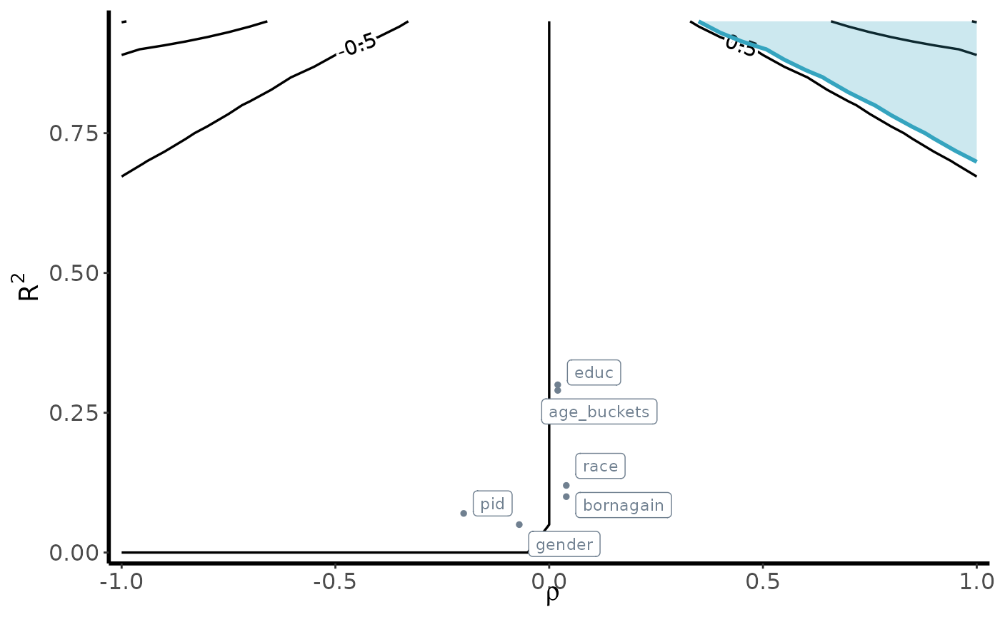

Conducting sensitivity analysis for survey weights
survey_weights.RmdWe begin by setting up the survey design objects. We will examine a
Washington Post poll for Michigan conducted in 2020. We will use the
ces dataset (which corresponds to the subset of CES for the
state of Michigan) to generate targets for raking. When
candidate = 1, this implies that the individual indicated
they would vote for Biden, whereas 0 implies either voting for Trump or
another candidate.
Setting up survey objects
The senseweight package builds on top of the
survey package to conduct sensitivity analysis. To start,
we will set up different survey objects for our analysis.
wapo_srs <- svydesign(ids = ~ 1, data = wapo)
ces_awt <- svydesign(ids = ~ 1,
weights = ~ vvweight_post,
data = ces)
#Set up raking formula:
formula_rake <- ~ age_buckets + educ + gender + race + educ + pid + bornagain
targets_rake <- create_targets(ces_awt, formula_rake)
#PERFORM RAKING:
model_rake <- calibrate(
design = wapo_srs,
formula = formula_rake,
population = targets_rake,
calfun = "raking",
force = TRUE
)
rake_results <- svydesign( ~ 1, data = wapo, weights = stats::weights(model_rake))
#Estimate from raking results:
weights = stats::weights(rake_results) * nrow(model_rake)
unweighted_estimate = svymean(~ candidate, wapo_srs, na.rm = TRUE)
weighted_estimate = svymean(~ candidate, model_rake, na.rm = TRUE)Summarizing sensitivity
With the survey objects, we can now generate our sensitivity summaries. The following function will produce a table that outputs the unweighted estimate, the weighted estimate, and the robustness value corresponding to a threshold value . The threshold value corresponds to an estimate that would result in a change in the substantive takeaway from a result.
Here, for illustrative purposes, we set the threshold value to 0.53, which represents a movement that would be 3 times the standard error. We estimate a robustness value of 0.08. This implies that a confounder must result in an error in the weights that explain 8% of the variation in the oracle weights and the outcome in order to result in a killer confounder.
summarize_sensitivity(estimand = 'Survey',
Y = wapo$candidate,
weights = weights,
svy_srs = unweighted_estimate,
svy_wt = weighted_estimate,
b_star = 0.53)
#> Unweighted Unweighted_SE Estimate SE RV
#> 1 0.5092251 0.01754357 0.4992384 0.01347646 0.08To help reason about the plausibility of potential confounders, we
can also perform benchmarking. To benchmark a single covariate, we can
use the benchmark_survey function:
benchmark_survey('educ',
formula = formula_rake,
weights = weights,
pop_svy = ces_awt,
sample_svy = wapo_srs,
Y = wapo$candidate)
#> variable R2_benchmark rho_benchmark bias
#> 1 educ 0.3005875 0.02176965 0.004966802Alternatively, we can choose to benchmark all the covariates by
calling run_benchmarking:
covariates = c("age_buckets", "educ", "gender", "race",
"educ", "pid", "bornagain")
benchmark_results = run_benchmarking(estimate = 0.499,
RV = 0.08,
formula = formula_rake,
weights = weights,
pop_svy = ces_awt,
Y = wapo$candidate,
sample_svy = wapo_srs,
estimand= "Survey")
print(benchmark_results)
#> variable R2_benchmark rho_benchmark bias MRCS k_sigma_min k_rho_min
#> 1 age_buckets 0.29 0.02 0.00 138.48 0.28 17.43
#> 2 educ 0.30 0.02 0.00 100.47 0.27 12.99
#> 3 gender 0.05 -0.07 -0.01 -86.07 1.48 -4.06
#> 4 race 0.12 0.04 0.00 101.06 0.65 7.50
#> 5 pid 0.07 -0.20 -0.02 -26.27 1.11 -1.44
#> 6 bornagain 0.10 0.04 0.00 116.56 0.78 7.76Bias contour plot
To visualize the sensitivity of our underlying estimates, we can
generate a bias contour plot using the following
contour_plot function:
contour_plot(varW = var(weights),
sigma2 = var(wapo$candidate),
killer_confounder = 0.53,
df_benchmark = benchmark_results,
shade = TRUE,
label_size = 3)